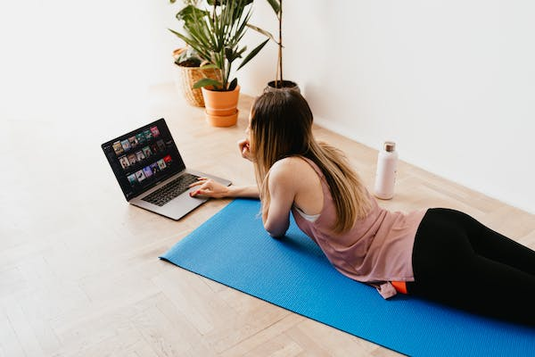

COMO CREAR UNA RUTINA QUE TE APORTE BIENESTAR EN EL TELETRABAJO.
Teletrabaja de forma saludable
¿Te ha tocado trabajar desde casa? Y tu cuerpo lo ha notado.
Puede que no seas consciente, pero el teletrabajo tiene consecuencias en tu salud.
En este post te cuento cómo conseguir bienestar en el teletrabajo con los trucos que yo misma he aplicado para crear una rutina de teletrabajo saludable.
Además, te propongo una rutina para relajar tu espalda que puedes hacer sentada en tu silla y en solo 10 minutos. ¡Más fácil imposible!
Pero antes, vamos a empezar con un pequeño test que te ayudará a saber si trabajar desde casa te está afectando a nivel físico y/o mental.
Solo tienes que responder SÍ o NO a las siguientes preguntas:
- ¿Te cuesta desconectar?
- ¿ Has aumentado tu jornada laboral casi sin darte cuenta?
- ¿Notas menor rapidez mental y falta de concentración?
- ¿Tienes mayor sensación de aislamiento?
- ¿Tienes dolores musculoesqueléticos?
- ¿Has aumentado de peso?
- ¿Tu descanso nocturno es más irregular?
- ¿Sientes tus piernas más pesadas?
- ¿Tienes trastornos digestivos?
Desde que nació Respira Pilates, las horas de mi jornada laboral frente al ordenador aumentaron,y con el comienzo de la pandemia prácticamente realizo un 100% de mi trabajo desde casa.
Ya hace más de un año del primer estado de alarma. Y a todas nos ha cambiado en algo la vida.
A nivel laboral, muchas empresas se han adaptado en mayor o menor medida al teletrabajo.
Al margen de la legislación, de las ventajas y los inconvenientes de trabajar desde casa, del teletrabajo y su relación con la productividad, de la conciliación laboral y de otros muchos temas sobre los que se ha hablado largo y tendido, hay una cosa que me toca de cerca y que me parece importantísima: teletrabajar de forma saludable.
Cada día recibo correos y consultas de chicas que me escriben contándome cómo el cambio de hábitos y de rutina les ha afectado a su espalda y, en general, a diferentes molestias en su cuerpo.
Más dolores de espalda, más tensiones o molestias distintas a las que tenían antes…
Trabajar fuera de casa exige más movimiento: el desplazamiento hasta tu lugar de trabajo y el movimiento dentro de la oficina: te levantas a la impresora, a coger una carpeta, a charlar un ratito con tus compañeros…
Pero…¿en casa qué? Lo tienes todo a mano y pueden pasar horas sin que te despegues de la silla.
Y eso tiene efectos negativos.
Si sigues aquí es porque quieres encontrar una solución.
Para contrarrestar esos efectos, hoy te voy a ayudar consejos para que teletrabajar no ponga en riesgo tu salud.
De forma fácil, sencilla y en poquito tiempo. Tan cómoda que incluso puedes usar tu silla para resetear tu cuerpo.
Pero antes, “el Gran Consejo”. El más importante de todos: Crea una rutina a prueba de flojera.
Esta es la base que engloba el resto de recomendaciones.
Si me lees a menudo, sabes que soy fiel defensora de las mañanas. Empezar tu día centrada y relajada es vital para crear buenos hábitos.
Si empiezas el día enfocada, tendrás las de ganar.
Y lo demuestran a diario muchas de las personas de éxito.
¿Te animas a aliarte con tu rutina matutina para construir unos hábitos saludables que te permitan dar ritmo a tu trabajo y a cuidar tu cuerpo?
Levántate siempre a la misma hora
Ya sabes que dormir ocho horas es lo más recomendable pero, según varios estudios, es tan importante para la salud como irse a dormir y levantarse a la misma hora todos los días.
Varias investigaciones demuestran que las personas con un tiempo de despertar estricto están más satisfechas en general en todas las áreas de sus vidas:
en comparación con las personas que tienen más tiempo para levantarse cada mañana, las personas con tiempos de despertador estrictos estaban un 13 por ciento más satisfechos con su vida personal,
un 45 por ciento más satisfechos con su situación financiera y un 42 por ciento más satisfechos con su equilibrio entre la vida laboral y familiar.
Después de haber leído esto seguro que la frase que leerás a continuación no te sorprenderá tanto:
Muchos psicólogos opinan que tú mismo puedes arreglar tus desajustes en el sueño.
Si te acuestas y te levantas siempre a la misma hora tus ritmos biológicos terminan por ajustarse.
¿Te animas a probar durante varios días seguidos? Seguro que notarás como tu sueño sigue un ritmo más natural.
¡Prohibido quedarse en pijama!
Aséate y vístete como si fueras a la oficina. No hace falta que uses tacones, pero tampoco te quedes como recién salida de la cama todo el día.
Ponte ropa cómoda con la que te sientas a gusto, confortable…y un poco más mona. Todo eso te ayudará a motivarte.
Crea tu rinconcito para trabajar.
No te puedes hacer una idea de lo importante que es que te sientas cómoda en tu lugar de trabajo.
En una oficina es más complicado pero en tu casa las posibilidades son infinitas. Disfruta adaptando y creando un espacio de trabajo que te inspire y te motive.
El primer paso: limpiar y ordenar.
El siguiente lo decides tú: usa un difusor de aceite, una foto inspiradora, un detalle que te traiga buenos recuerdos, una libreta bonita …
¡Rodéate de cosas que te inspiren y que te llenen de felicidad y buena energía!br
Evita distracciones: ¡fuera móviles, redes, tv!
¿Solo usas el modo avión de tu teléfono cuando viajas? Pues, si tu trabajo no te exige estar pendiente del teléfono,
vamos a darle un nuevo uso a este modo. Actívalo y olvídate de todas las notificaciones por un rato.
¿Prefieres algo menos radical? Modo silencio ON y voltea el teléfono para no ver la pantalla.
Si necesitas un extra de concentración, pon un cartelito en la puerta que indique : “No molestar”